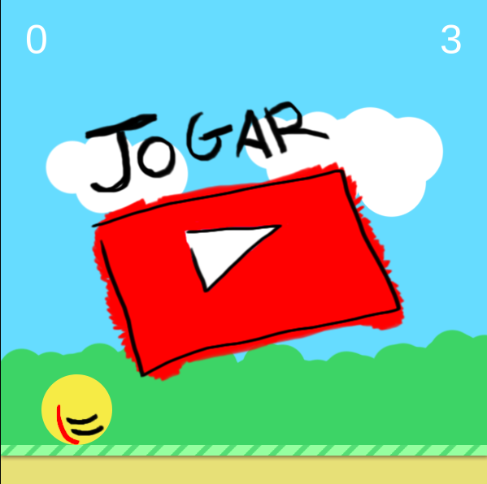
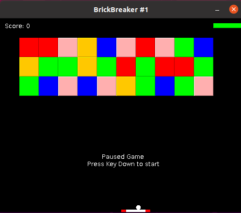
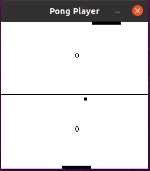

Salão de jogos

Mestre dos pulos
JavaScript
Jump Master precisará vencer vários obstáculos para se tornar O Mestre dos Pulos
Controles:
- Seta para cima para pular
- Seta para cima 2X para super pulo
Creditos: Filipe Alves
Tutorial (canal Velasoft)

Brick Breaker 0.1 - Beta
Java
Quebre todos os tijolos de cada nível para vencer
Controles:
- Seta para baixo para pausar/iniciar o jogo
- Seta para esquerda para mover para a esquerda
- Seta para a direita para mover para a direita
Creditos: Rodolfo Dirack
Tutorial (Danki code)

Pong Player 0.1 - Beta
Java
Desafie uma inteligência artificial e faça maiss pontos para vencer
Controles:
- Seta para baixo para pausar o jogo
- Seta para baixo para iniciar o jogo
- Seta para esquerda para mover para a esquerda
- Seta para a direita para mover para a direita
Creditos: Rodolfo Dirack
Tutorial (Danki code)Suporte
- Geofisicando
- GPGEOF
- Perguntas frequentes
- Licença de uso (GPL 3)